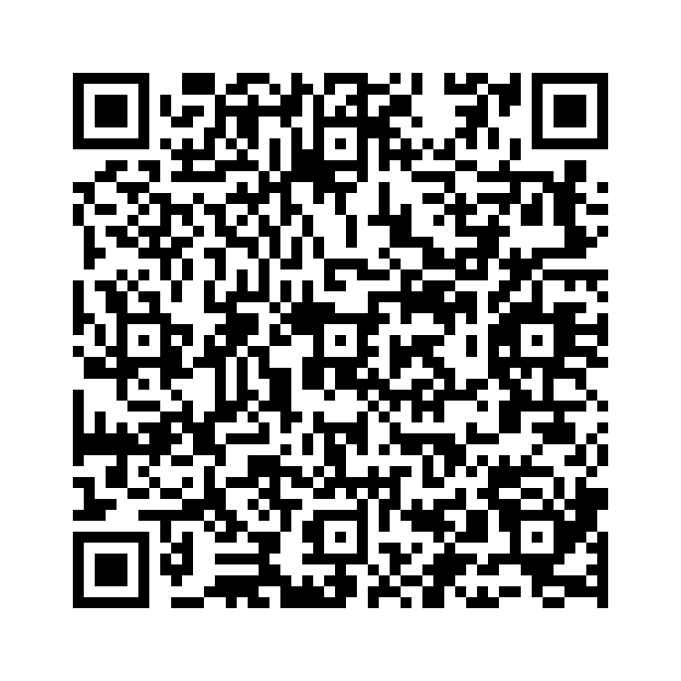

数量表現は、量や数を表す際に使われます。以下は、よく使われる表現です：
例文：
以下の単語を並び替えて正しい文を作成しましょう。（和訳を参考にしてください）

問題1: (time / have / don’t / much / we) - 私たちには時間があまりありません。
解答: We don’t have much time。
解説: much は否定文で不可算名詞「time」に使われています。
問題2: (money / has / left / a / she / little) - 彼女には少しお金が残っています。
解答: She has a little money left。
解説: a little は「少しある」を意味し、不可算名詞「money」に使われています。
問題3: (food / of / plenty / there / is / on / the / table) - テーブルには十分な食べ物があります。
解答: There is plenty of food on the table。
解説: plenty of は「十分な」を意味し、不可算名詞「food」に使われています。
問題4: (the / students / are / all / the / in / classroom) - 教室には全ての生徒がいます。
解答: All the students are in the classroom。
解説: all は「全ての」を意味し、可算名詞「students」に使われています。
問題5: (water / has / very / little / he) - 彼はほとんど水を持っていません。
解答: He has very little water。
解説: little は「ほとんどない」を意味し、不可算名詞「water」に使われています。